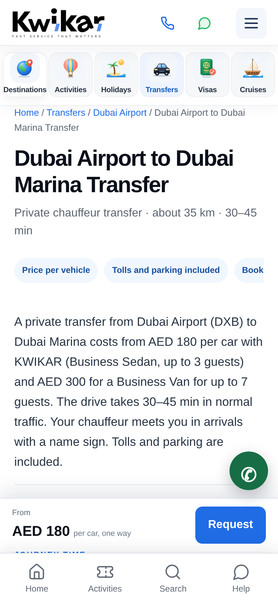
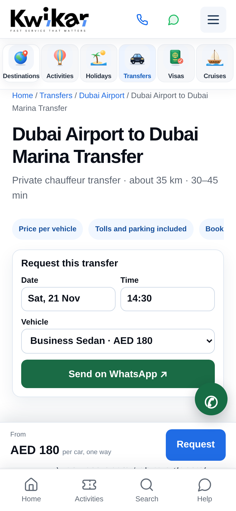

Designer, 14 Nov 2026 — needs Irfan's approval (new section / layout). Today the full transfer form is at the very bottom of each route page (~5,400px down on mobile). The sticky "Request" button jumps there, past all the content. Idea: a small box under the badges with date, time and vehicle (price from transfers.json) and a green "Send on WhatsApp" button. It opens WhatsApp with route + date + time + vehicle (+ the Ref code), and our team asks for the rest. The full form stays at the bottom for people who want to fill everything.
Expected benefit: airport travellers on phones can send a request in 3 taps from the first screen; more WhatsApp leads from the same traffic. Same tracking event (generate_lead) as the current form.

